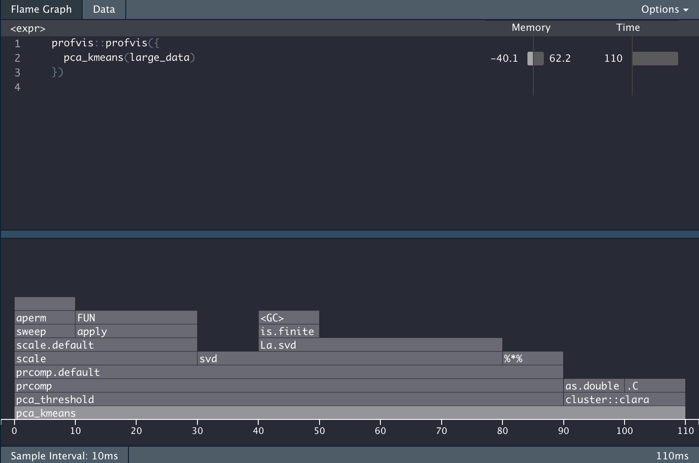
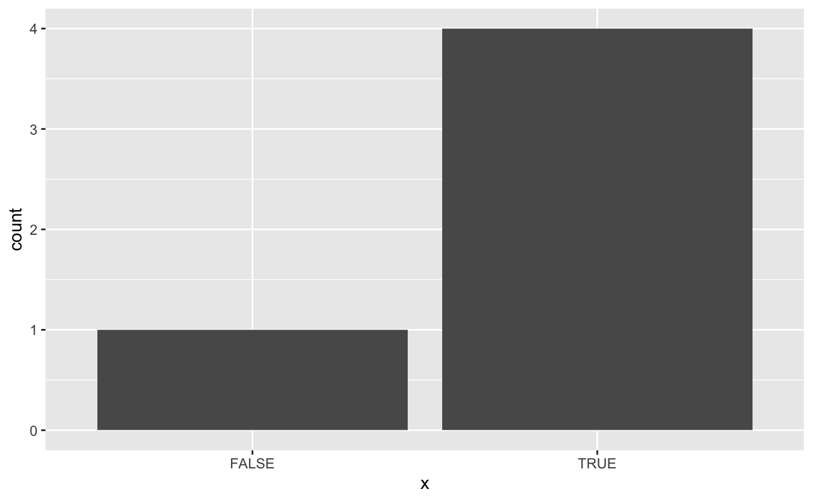

This blog post is going to describe how to write a customizable profiling function. If you are not familiar with profiling read the Profiling section of Advanced R to familiarize yourself, I’ll wait.
…
Welcome back!
Packages
While these packages aren’t strictly needed since most of what we are doing is happening in base R, am I still loading in tidyverse to do some easier string manipulations and plotting.
library(tidyverse)Profiling basics
You have properly used the profvis package. It is an amazing package and I use it on a daily basis. However, the amount of information you get can be overwhelming at times depending on your profiling goals.
Let’s propose in this scenario that we take in some data, scale and center it, apply PCA while only keeping the components that explain 90% of the variance and lastly apply CLARA clustering and return the classification.
The code to do that is contained in the following chunk.
pca_threshold <- function(x, threshold) {
data_pca <- prcomp(x, scale. = TRUE)
total_var <- sum(data_pca$sdev ^ 2)
num_comp <- which.max(cumsum(data_pca$sdev ^ 2 / total_var) >= threshold)
data_pca$x[, seq_len(num_comp)]
}
pca_kmeans <- function(x, threshold = 0.9, centers = 2) {
data_matrix <- as.matrix(x)
data_pca <- pca_threshold(data_matrix, threshold = threshold)
data_kmeans <- cluster::clara(data_pca, k = centers)
data_kmeans$cluster
}Now we create some data and run profvis on it
large_data <- diamonds %>%
select_if(is.numeric) %>%
sample_n(100000, replace = TRUE)profvis::profvis({
pca_kmeans(large_data)
})And we get the following information back.


The Problem
It is very informative, but it is also giving a LOT of information. Let’s propose we want to know the percentage of the computation time is used to do the PCA calculations. In the profvis framework you would need to do the calculation manually. All while waiting for the HTML widget to load.
The Idea
profvis uses the Rprof function internally to inspect what is happening. By using Rprof directly we can extract the profile and calculate our output/matrix.
The base profiling steps are
tmp <- tempfile()
Rprof(tmp)
##################
# Code goes here #
##################
Rprof(NULL)
profile <- readLines(tmp)This chunk will set up a temporary file, start the profiler and set it to write to the temporary file, stop the profiler and read the result from the profiler.
Trying it with our code we get
tmp <- tempfile()
Rprof(tmp)
x <- pca_kmeans(large_data)
Rprof(NULL)
profile <- readLines(tmp)
head(profile)## [1] "sample.interval=20000"
## [2] "\"aperm.default\" \"aperm\" \"apply\" \"scale.default\" \"scale\" \"prcomp.default\" \"prcomp\" \"pca_threshold\" \"pca_kmeans\" "
## [3] "\"is.na\" \"FUN\" \"apply\" \"scale.default\" \"scale\" \"prcomp.default\" \"prcomp\" \"pca_threshold\" \"pca_kmeans\" "
## [4] "\"is.na\" \"FUN\" \"apply\" \"scale.default\" \"scale\" \"prcomp.default\" \"prcomp\" \"pca_threshold\" \"pca_kmeans\" "
## [5] "\"is.na\" \"FUN\" \"apply\" \"scale.default\" \"scale\" \"prcomp.default\" \"prcomp\" \"pca_threshold\" \"pca_kmeans\" "
## [6] "\"is.na\" \"FUN\" \"apply\" \"scale.default\" \"scale\" \"prcomp.default\" \"prcomp\" \"pca_threshold\" \"pca_kmeans\" "Let’s see what these lines mean. First, we notice that the first line is just denoting the sample interval, so we can ignore that for now. Let’s look at the next line
## [1] "\"aperm.default\" \"aperm\" \"apply\" \"scale.default\" \"scale\" \"prcomp.default\" \"prcomp\" \"pca_threshold\" \"pca_kmeans\" "This is a snapshot of the “call-stack”, and it reads inside-out. So we have that aperm.default is called inside aperm which is called inside apply which is called inside scale.default and so on and so forth all the way up to pca_kmeans.
Now that we know how Rprof works, we can write some code that checks whether “pca_threshold” appears in the call stack and then find the percentage.
The Solution
We can now create a function that will calculate the percentage of the time is being spent in a certain function.
prof_procentage <- function(expr, pattern) {
tmp <- tempfile()
Rprof(tmp)
expr
Rprof(NULL)
profile <- readLines(tmp)[-1]
mean(grepl(pattern, profile))
}This function can now easily be used in our calculation.
prof_procentage(
x <- pca_kmeans(large_data),
pattern = "pca_threshold"
)
## [1] 0.875And this is how to create a custom profiler. Simply modify the last line in the skeleton function prof_procentage to change its behavior.
the Extensions
The sky’s the limit! you are only limited by your regex abilities. You can also change the output. In the last example, I returned a numeric of the percentage, But we can also have the output be a plot
prof_procentage_plot <- function(expr, pattern) {
tmp <- tempfile()
Rprof(tmp)
expr
Rprof(NULL)
profile <- readLines(tmp)[-1]
data.frame(x = grepl(pattern, profile)) %>%
ggplot(aes(x)) +
geom_bar()
}
prof_procentage_plot(
x <- pca_kmeans(large_data),
pattern = "pca_threshold"
)
The follow-up
After my initial announcement of this post, I got a helpful tweet from Hadley Wickham about the profvis::parse_rprof(). In essence, it will help you parse the file you write with Rprof to help you get to your answer faster and safer.
So some output like
## [1] "sample.interval=20000"
## [2] "\"aperm.default\" \"aperm\" \"apply\" \"scale.default\" \"scale\" \"prcomp.default\" \"prcomp\" \"pca_threshold\" \"pca_kmeans\" "
## [3] "\"is.na\" \"FUN\" \"apply\" \"scale.default\" \"scale\" \"prcomp.default\" \"prcomp\" \"pca_threshold\" \"pca_kmeans\" "
## [4] "\"is.na\" \"FUN\" \"apply\" \"scale.default\" \"scale\" \"prcomp.default\" \"prcomp\" \"pca_threshold\" \"pca_kmeans\" "
## [5] "\"is.na\" \"FUN\" \"apply\" \"scale.default\" \"scale\" \"prcomp.default\" \"prcomp\" \"pca_threshold\" \"pca_kmeans\" "
## [6] "\"is.na\" \"FUN\" \"apply\" \"scale.default\" \"scale\" \"prcomp.default\" \"prcomp\" \"pca_threshold\" \"pca_kmeans\" "Will be transformed to a nice data.frame with profvis::parse_rprof()
## time depth label filenum linenum memalloc meminc filename
## 1 1 9 aperm.default NA NA 0 0 <NA>
## 2 1 8 aperm NA NA 0 0 <NA>
## 3 1 7 apply NA NA 0 0 <NA>
## 4 1 6 scale.default NA NA 0 0 <NA>
## 5 1 5 scale NA NA 0 0 <NA>
## 6 1 4 prcomp.default NA NA 0 0 <NA>
## 7 1 3 prcomp NA NA 0 0 <NA>
## 8 1 2 pca_threshold NA NA 0 0 <NA>
## 9 1 1 pca_kmeans NA NA 0 0 <NA>
## 10 2 9 is.na NA NA 0 0 <NA>
## 11 2 8 FUN NA NA 0 0 <NA>
## 12 2 7 apply NA NA 0 0 <NA>
## 13 2 6 scale.default NA NA 0 0 <NA>
## 14 2 5 scale NA NA 0 0 <NA>
## 15 2 4 prcomp.default NA NA 0 0 <NA>
## 16 2 3 prcomp NA NA 0 0 <NA>
## 17 2 2 pca_threshold NA NA 0 0 <NA>
## 18 2 1 pca_kmeans NA NA 0 0 <NA>
## 19 3 9 is.na NA NA 0 0 <NA>
## 20 3 8 FUN NA NA 0 0 <NA>
## 21 3 7 apply NA NA 0 0 <NA>
## 22 3 6 scale.default NA NA 0 0 <NA>
## 23 3 5 scale NA NA 0 0 <NA>
## 24 3 4 prcomp.default NA NA 0 0 <NA>
## 25 3 3 prcomp NA NA 0 0 <NA>
## 26 3 2 pca_threshold NA NA 0 0 <NA>
## 27 3 1 pca_kmeans NA NA 0 0 <NA>
## 28 4 9 is.na NA NA 0 0 <NA>
## 29 4 8 FUN NA NA 0 0 <NA>
## 30 4 7 apply NA NA 0 0 <NA>
## 31 4 6 scale.default NA NA 0 0 <NA>
## 32 4 5 scale NA NA 0 0 <NA>
## 33 4 4 prcomp.default NA NA 0 0 <NA>
## 34 4 3 prcomp NA NA 0 0 <NA>
## 35 4 2 pca_threshold NA NA 0 0 <NA>
## 36 4 1 pca_kmeans NA NA 0 0 <NA>
## 37 5 9 is.na NA NA 0 0 <NA>
## 38 5 8 FUN NA NA 0 0 <NA>
## 39 5 7 apply NA NA 0 0 <NA>
## 40 5 6 scale.default NA NA 0 0 <NA>
## 41 5 5 scale NA NA 0 0 <NA>
## 42 5 4 prcomp.default NA NA 0 0 <NA>
## 43 5 3 prcomp NA NA 0 0 <NA>
## 44 5 2 pca_threshold NA NA 0 0 <NA>
## 45 5 1 pca_kmeans NA NA 0 0 <NA>session information
─ Session info ───────────────────────────────────────────────────────────────
setting value
version R version 4.1.0 (2021-05-18)
os macOS Big Sur 10.16
system x86_64, darwin17.0
ui X11
language (EN)
collate en_US.UTF-8
ctype en_US.UTF-8
tz America/Los_Angeles
date 2021-07-15
─ Packages ───────────────────────────────────────────────────────────────────
package * version date lib source
assertthat 0.2.1 2019-03-21 [1] CRAN (R 4.1.0)
backports 1.2.1 2020-12-09 [1] CRAN (R 4.1.0)
blogdown 1.3.2 2021-06-09 [1] Github (rstudio/blogdown@00a2090)
bookdown 0.22 2021-04-22 [1] CRAN (R 4.1.0)
broom 0.7.8 2021-06-24 [1] CRAN (R 4.1.0)
bslib 0.2.5.1 2021-05-18 [1] CRAN (R 4.1.0)
cellranger 1.1.0 2016-07-27 [1] CRAN (R 4.1.0)
cli 3.0.0 2021-06-30 [1] CRAN (R 4.1.0)
clipr 0.7.1 2020-10-08 [1] CRAN (R 4.1.0)
cluster 2.1.2 2021-04-17 [1] CRAN (R 4.1.0)
codetools 0.2-18 2020-11-04 [1] CRAN (R 4.1.0)
colorspace 2.0-2 2021-06-24 [1] CRAN (R 4.1.0)
crayon 1.4.1 2021-02-08 [1] CRAN (R 4.1.0)
DBI 1.1.1 2021-01-15 [1] CRAN (R 4.1.0)
dbplyr 2.1.1 2021-04-06 [1] CRAN (R 4.1.0)
desc 1.3.0 2021-03-05 [1] CRAN (R 4.1.0)
details * 0.2.1 2020-01-12 [1] CRAN (R 4.1.0)
digest 0.6.27 2020-10-24 [1] CRAN (R 4.1.0)
dplyr * 1.0.7 2021-06-18 [1] CRAN (R 4.1.0)
ellipsis 0.3.2 2021-04-29 [1] CRAN (R 4.1.0)
evaluate 0.14 2019-05-28 [1] CRAN (R 4.1.0)
fansi 0.5.0 2021-05-25 [1] CRAN (R 4.1.0)
farver 2.1.0 2021-02-28 [1] CRAN (R 4.1.0)
forcats * 0.5.1 2021-01-27 [1] CRAN (R 4.1.0)
fs 1.5.0 2020-07-31 [1] CRAN (R 4.1.0)
generics 0.1.0 2020-10-31 [1] CRAN (R 4.1.0)
ggplot2 * 3.3.5 2021-06-25 [1] CRAN (R 4.1.0)
glue 1.4.2 2020-08-27 [1] CRAN (R 4.1.0)
gtable 0.3.0 2019-03-25 [1] CRAN (R 4.1.0)
haven 2.4.1 2021-04-23 [1] CRAN (R 4.1.0)
highr 0.9 2021-04-16 [1] CRAN (R 4.1.0)
hms 1.1.0 2021-05-17 [1] CRAN (R 4.1.0)
htmltools 0.5.1.1 2021-01-22 [1] CRAN (R 4.1.0)
httr 1.4.2 2020-07-20 [1] CRAN (R 4.1.0)
jquerylib 0.1.4 2021-04-26 [1] CRAN (R 4.1.0)
jsonlite 1.7.2 2020-12-09 [1] CRAN (R 4.1.0)
knitr * 1.33 2021-04-24 [1] CRAN (R 4.1.0)
labeling 0.4.2 2020-10-20 [1] CRAN (R 4.1.0)
lifecycle 1.0.0 2021-02-15 [1] CRAN (R 4.1.0)
lubridate 1.7.10 2021-02-26 [1] CRAN (R 4.1.0)
magrittr 2.0.1 2020-11-17 [1] CRAN (R 4.1.0)
modelr 0.1.8 2020-05-19 [1] CRAN (R 4.1.0)
munsell 0.5.0 2018-06-12 [1] CRAN (R 4.1.0)
pillar 1.6.1 2021-05-16 [1] CRAN (R 4.1.0)
pkgconfig 2.0.3 2019-09-22 [1] CRAN (R 4.1.0)
png 0.1-7 2013-12-03 [1] CRAN (R 4.1.0)
purrr * 0.3.4 2020-04-17 [1] CRAN (R 4.1.0)
R6 2.5.0 2020-10-28 [1] CRAN (R 4.1.0)
Rcpp 1.0.7 2021-07-07 [1] CRAN (R 4.1.0)
readr * 1.4.0 2020-10-05 [1] CRAN (R 4.1.0)
readxl 1.3.1 2019-03-13 [1] CRAN (R 4.1.0)
reprex 2.0.0 2021-04-02 [1] CRAN (R 4.1.0)
rlang 0.4.11 2021-04-30 [1] CRAN (R 4.1.0)
rmarkdown 2.9 2021-06-15 [1] CRAN (R 4.1.0)
rprojroot 2.0.2 2020-11-15 [1] CRAN (R 4.1.0)
rstudioapi 0.13 2020-11-12 [1] CRAN (R 4.1.0)
rvest 1.0.0 2021-03-09 [1] CRAN (R 4.1.0)
sass 0.4.0 2021-05-12 [1] CRAN (R 4.1.0)
scales 1.1.1 2020-05-11 [1] CRAN (R 4.1.0)
sessioninfo 1.1.1 2018-11-05 [1] CRAN (R 4.1.0)
stringi 1.6.2 2021-05-17 [1] CRAN (R 4.1.0)
stringr * 1.4.0 2019-02-10 [1] CRAN (R 4.1.0)
tibble * 3.1.2 2021-05-16 [1] CRAN (R 4.1.0)
tidyr * 1.1.3 2021-03-03 [1] CRAN (R 4.1.0)
tidyselect 1.1.1 2021-04-30 [1] CRAN (R 4.1.0)
tidyverse * 1.3.1 2021-04-15 [1] CRAN (R 4.1.0)
utf8 1.2.1 2021-03-12 [1] CRAN (R 4.1.0)
vctrs 0.3.8 2021-04-29 [1] CRAN (R 4.1.0)
withr 2.4.2 2021-04-18 [1] CRAN (R 4.1.0)
xfun 0.24 2021-06-15 [1] CRAN (R 4.1.0)
xml2 1.3.2 2020-04-23 [1] CRAN (R 4.1.0)
yaml 2.2.1 2020-02-01 [1] CRAN (R 4.1.0)
[1] /Library/Frameworks/R.framework/Versions/4.1/Resources/library